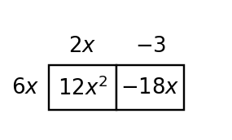
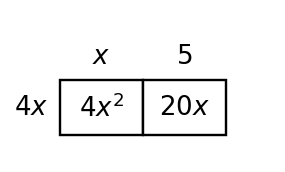
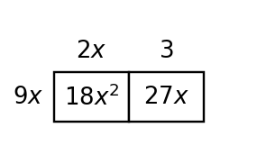

GCF and Structure
Mathematical idea: Factoring out a GCF reverses distribution by pulling out the largest factor all terms have in common.
Today you will identify common factors in polynomial terms and rewrite expressions as equivalent products. You will use area models, multiplication checks, and structure to decide whether a factored form is complete.
Learning Target
Learning Target: Students will identify common factors and use structure to rewrite polynomial expressions.
I can statements
- I can construct equivalent polynomial expressions by factoring out a greatest common factor.
- I can apply structure to rewrite polynomial expressions in a more useful form.
- I can determine whether a rewritten expression is reasonable by checking common factors and equivalent products.
What's To Come
This is a long-range preview for future lessons. Do not solve it today. Instead, annotate it individually. Circle anything familiar, underline symbols or directions that seem important, and write notes about what information you think will be needed later.
As you annotate, ask yourself: What parts (words, symbols, graphs) do you KNOW? What parts look FAMILIAR? What parts look like jibberish?
A student designed the area model shown to represent a product, but the model does not support the claimed expression $5m^2-12m-6$.
Revise either the expression or one part of the model so the representations match. Then write the matching product and sum.

Intro
Directions
Read the introduction aloud with a partner or in a small group. As you read, annotate the text by highlighting important ideas, circling key vocabulary, and writing short notes about connections, questions, or predictions in the margins.
Polynomial expressions can often be rewritten without changing their value. When every term contains the same number factor or variable factor, those shared pieces are called common factors. Pulling them out helps reveal the structure of the expression.
Factoring is connected to multiplication. After you factor an expression, multiplying the outside factor through the parentheses should reproduce every original term. This check helps catch missing signs, missing powers, and incomplete factors.
Two students might both find a common factor, but their answers may not be equally useful. If one student pulls out only a small shared factor, another common factor may still be hiding inside the parentheses. Careful factoring usually asks for the greatest common factor so the remaining expression is simplified as much as possible.
Area models make the structure visible. The side length outside a row or column represents a factor, and the inside rectangles represent the products. When all inside terms share a dimension, that common dimension can become the outside factor.
Common-factor structure appears in contexts too. If two costs, areas, or quantities all repeat the same piece, factoring can show the repeated part once and make the rest of the calculation easier to interpret.
Stop and Discuss
- What does it mean for terms to have a common factor?
- How can multiplying back help check a factored expression?
- Why is the greatest common factor more useful than any smaller common factor?
The greatest common factor is the largest number-and-variable factor shared by every term.
$$12x^2-18x=6x(2x-3)$$| Term | $12x^2$ | $-18x$ |
|---|---|---|
| Shared factor | $6x$ | $6x$ |
| Left inside | $2x$ | $-3$ |

Context: The outside factor $6x$ represents the repeated part shared by both terms.
Example 1: Identify a Common Factor
Work with the expression $15x^3-10x^2+5x$.
Think about the greatest number factor and the lowest power of $x$ that appears in every term.
- What number factor is shared by 15, 10, and 5?
- What power of $x$ is shared by all three terms?
- Write the expression in the form GCF times remaining factor.
You Try It 1: Find the GCF
Work with the expression $18m^4+12m^2-6m$.
Look for the largest factor shared by all terms.
- Find the greatest number factor.
- Find the shared variable factor.
- Write the expression as a product.
Stop and Discuss
- What mathematical structure did Example 1 and You Try It 1 have in common?
- What check would convince you that the answer is reasonable?
An area model connects the outside dimensions to the terms inside the rectangle.
$$4x(x+5)=4x^2+20x$$| Part | Meaning |
|---|---|
| Outside row | $4x$ is the common factor |
| Columns | $x$ and $5$ are the remaining factors |
| Cells | $4x^2$ and $20x$ are the products |

Context: The model shows the same total area written as a product and as a sum.
Example 2: Complete an Area Model
A rectangle has one outside side labeled $3x$ and column labels $x$ and $-4$.
Use the outside factors to fill the inside areas, then write the total area two ways.
| Column | $x$ | $-4$ |
|---|---|---|
| Row $3x$ | _____ | _____ |
- Fill in each cell of the model.
- Write the total area as a sum.
- Write the total area as a product.
You Try It 2: Build a Product from an Area Model
A rectangle has one outside side labeled $5p$ and column labels $2p$ and $-3$.
Fill the inside cells and write two equivalent forms.
| Column | $2p$ | $-3$ |
|---|---|---|
| Row $5p$ | _____ | _____ |
- Fill in each area.
- Write the total as a sum.
- Write the total as a product.
Stop and Discuss
- What mathematical structure did Example 2 and You Try It 2 have in common?
- What check would convince you that the answer is reasonable?
Example 3: Factor and Verify
Factor $21a^2-14a$ completely.
After factoring, multiply your answer back to check that both terms return.
- Find the GCF.
- Write the factored expression.
- Multiply back to verify equivalence.
You Try It 3: Factor and Check
Factor $32n^3-20n^2$ completely.
Use the GCF and verify by distributing.
- Find the GCF.
- Write the factored form.
- Multiply back to check your answer.
Stop and Discuss
- What mathematical structure did Example 3 and You Try It 3 have in common?
- What check would convince you that the answer is reasonable?
A factored form is complete when there is no common factor left inside the parentheses.
$$18x^2+27x=9x(2x+3)$$| Attempt | Multiply back | Complete? |
|---|---|---|
| $3x(6x+9)$ | $18x^2+27x$ | No; $6x+9$ still shares 3 |
| $9x(2x+3)$ | $18x^2+27x$ | Yes |

Context: Multiplying back checks equivalence; checking inside the parentheses checks completeness.
Example 4: Critique a Factoring Claim
A student says $24y^2+36y=6y(4y+6)$ and claims the expression is fully factored.
Decide whether the student is correct and support your answer with structure.
- Multiply back. Is the expression equivalent?
- Is the factorization complete?
- Write a complete factored form.
You Try It 4: Find the Incomplete Step
A student says $30z^2-45z=5z(6z-9)$ and stops.
Decide whether more factoring is possible.
- Does the product multiply back correctly?
- What common factor remains inside the parentheses?
- Write the complete factored form.
Stop and Discuss
- What mathematical structure did Example 4 and You Try It 4 have in common?
- What check would convince you that the answer is reasonable?
Summary
A greatest common factor is the largest factor shared by every term in an expression.
Factoring out the GCF rewrites a sum as a product, and distributing can check that the product is equivalent to the original expression.
Area models help connect a factored product to the terms inside the rectangle.
A factorization may multiply back correctly and still be incomplete if a common factor remains inside the parentheses.
Common Mistakes
- Factoring only a number. Why it is tempting: students see the coefficients first and ignore variable powers. What to check instead: check the numbers and the lowest power of each shared variable.
- Forgetting a negative term. Why it is tempting: the minus sign feels separate from the term. What to check instead: keep each sign attached to its term while dividing by the GCF.
- Stopping too soon. Why it is tempting: a smaller common factor gives a true product. What to check instead: look inside the parentheses for another common factor.
- Changing the value. Why it is tempting: rewriting can feel like simplifying by deleting a factor. What to check instead: multiply back to verify every original term returns.
- Misreading an area model. Why it is tempting: inside cells and outside dimensions can be confused. What to check instead: match each cell to row factor times column factor.
Optional Future Task Reflection
Look back at the future task. Do not solve it yet. Highlight one part that makes more sense now than it did at the beginning. Circle one part that still feels unfamiliar. Write one sentence about what representation you would look at first.
Circle the greatest common factor in each expression, then write the remaining factor mentally.
- $4x+8$
- $10x+25y+5$
- $2x^2-8x$
- $9x^2y+12x+3xy$
Complete the missing areas in the model, then write one equivalent product for the total area.

What is one idea about greatest common factors and polynomial structure you understand better now than at the start of class? Write at least one complete sentence.
What is one thing about greatest common factors and polynomial structure you still want to understand or practice? Be specific — name the idea, not just "everything."